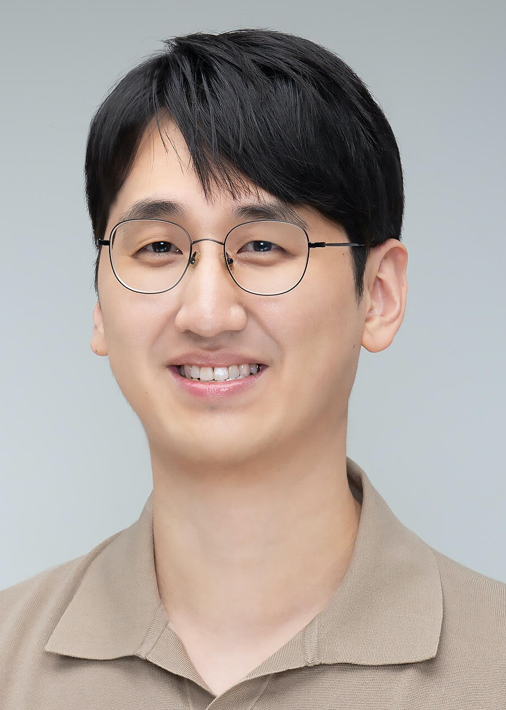

Members

Daekyum Kim (he/him)
Assistant Professor, Korea University
Director of Movement intelligence laboratory
Experiences
2023-current
2021-2023
Education
Ph.D. in Computer Science, Korea Advanced Institute of Science and Technology (KAIST)
B.S. in Mechanical Engineering, University of California, Los Angeles (UCLA)
Biography
Daekyum Kim received his B.S. degree in Mechanical Engineering from the University of California, Los Angeles, (Los Angeles, CA, USA), in 2015. He earned his Ph.D. degree in Computer Science at KAIST (Daejeon, Republic of Korea), in 2021. He was a Postdoctoral Research Fellow at the John A. Paulson School of Engineering and Applied Sciences, Harvard University (Cambridge, MA, USA), co-affiliated with Wyss Institute. Since September 2023, he has been an Assistant Professor with the School of Smart mobility and the School of Mechanical Engineering, Korea University (Seoul, Republic of Korea). His research interests are in the areas of machine learning, computer vision, robotics, and digital healthcare.
Research Interests
My research interests lies in the areas of machine learning, computer vision, robotics, and digital healthcare. The goal of our lab is to develop intelligent algorithms capable of understanding various aspects of human states - such as body kinematics, kinetics, activities, and intentions. Furthermore, drawing upon our understandings of human states, we aim to design robotics and digital healthcare systems that offer benefits to humans
Assistant Professor, Korea University
Director of Movement intelligence laboratory
Experiences
Assistant Professor, School of Smart Mobility, Korea University
Assistant Professor, School of Mechanical Engineering, Korea University
Research Affiliate, Harvard University
Advisory Board (with equity), Wurq Inc, 2023-current
Postdoctoral Research Fellow, John A. Paulson Harvard School of Engineering and Applied Sciences, Harvard University
Postdoctoral Research Fellow, Wyss Institute
Education
Ph.D. in Computer Science, Korea Advanced Institute of Science and Technology (KAIST)
B.S. in Mechanical Engineering, University of California, Los Angeles (UCLA)
Biography
Daekyum Kim received his B.S. degree in Mechanical Engineering from the University of California, Los Angeles, (Los Angeles, CA, USA), in 2015. He earned his Ph.D. degree in Computer Science at KAIST (Daejeon, Republic of Korea), in 2021. He was a Postdoctoral Research Fellow at the John A. Paulson School of Engineering and Applied Sciences, Harvard University (Cambridge, MA, USA), co-affiliated with Wyss Institute. Since September 2023, he has been an Assistant Professor with the School of Smart mobility and the School of Mechanical Engineering, Korea University (Seoul, Republic of Korea). His research interests are in the areas of machine learning, computer vision, robotics, and digital healthcare.
Research Interests
My research interests lies in the areas of machine learning, computer vision, robotics, and digital healthcare. The goal of our lab is to develop intelligent algorithms capable of understanding various aspects of human states - such as body kinematics, kinetics, activities, and intentions. Furthermore, drawing upon our understandings of human states, we aim to design robotics and digital healthcare systems that offer benefits to humans
MS/PhD student
Seokyong Sheem
Master student
Mechanical Engineering
Master student
Mechanical Engineering
SuyeongLee
MS/PhD student
Mechanical Engineering
MS/PhD student
Mechanical Engineering

ByenggwanKang
MS/PhD student
Mechanical Engineering
MS/PhD student
Mechanical Engineering

Sunyoung Hur
Intern
B.S. in Mechanical Engineering
Intern
B.S. in Mechanical Engineering

Sunin Baek
Intern
Mechanical Engineering
Intern
Mechanical Engineering
Undergraduate researcher
Comming soon.